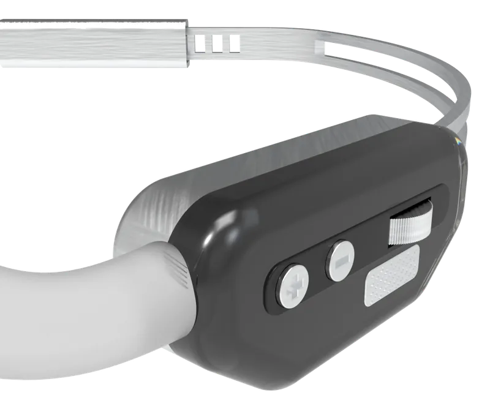

Design engineer. I take physical products from user research to working prototype.
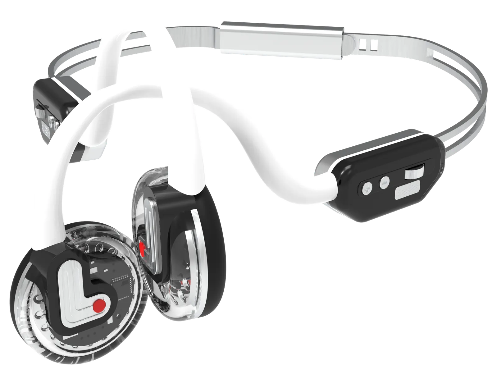
Seven projects across product design, mechatronics, robotics and simulation.

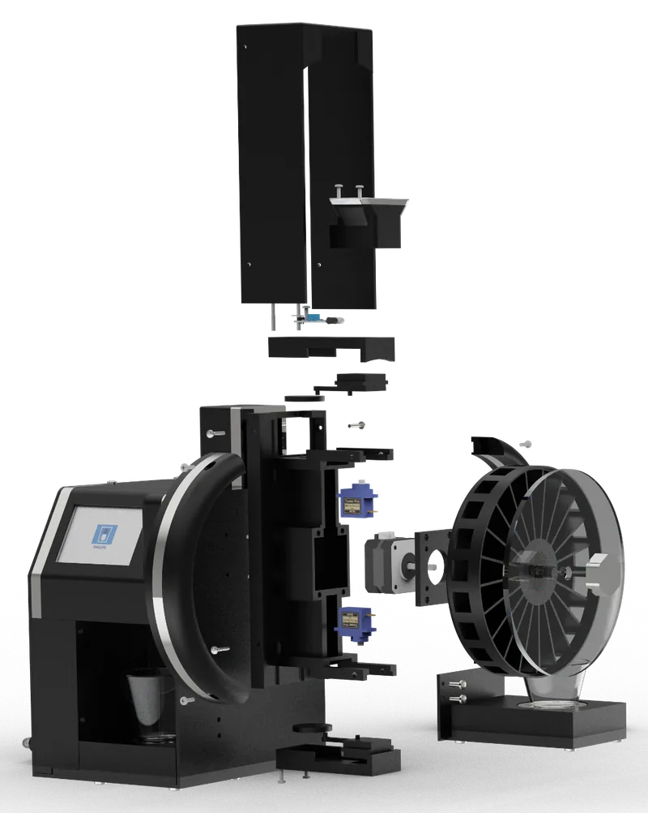
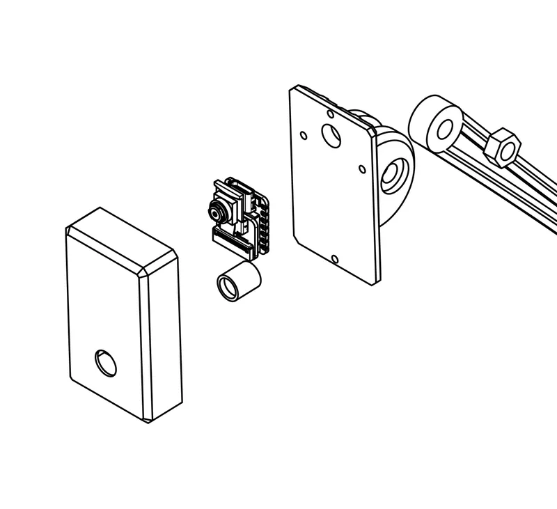

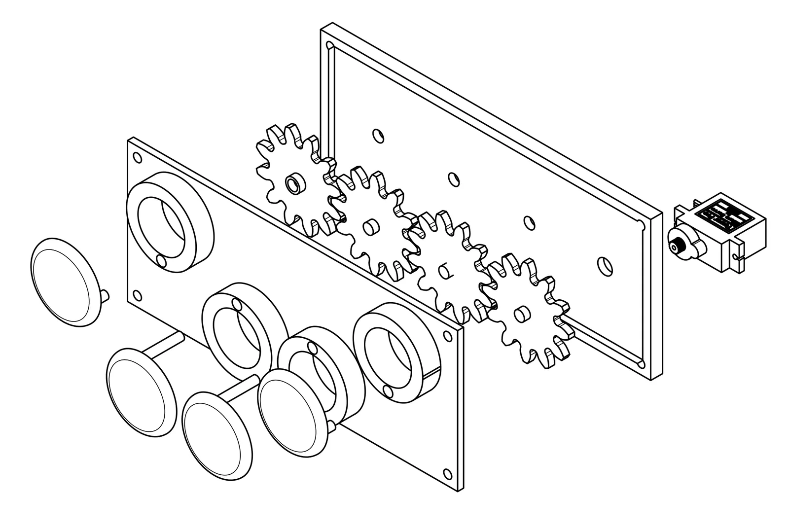

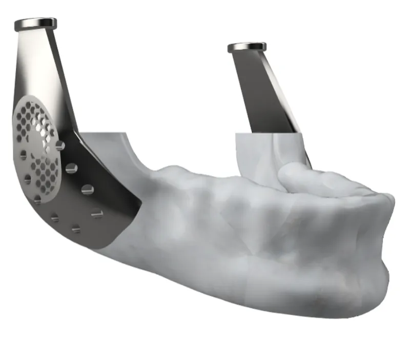

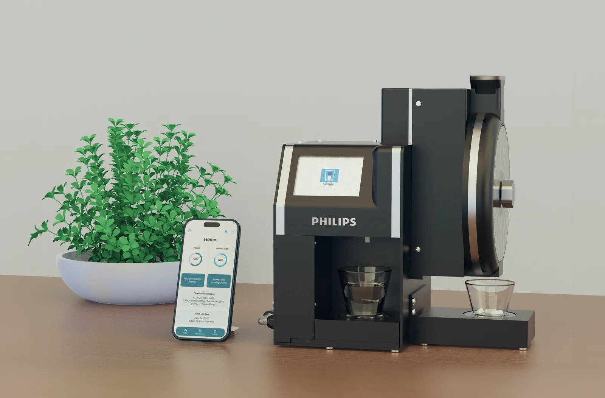

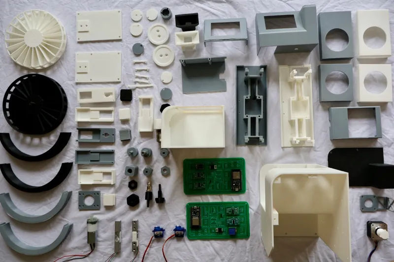
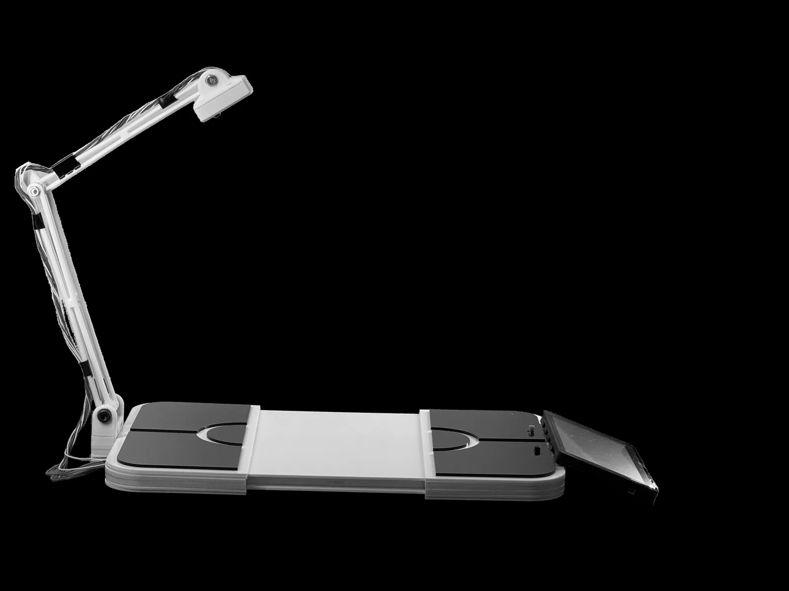


Probabilistic roadmap within 4% of the optimal path. Try the planner in your browser.
Robotics · Python · ROS · 2026
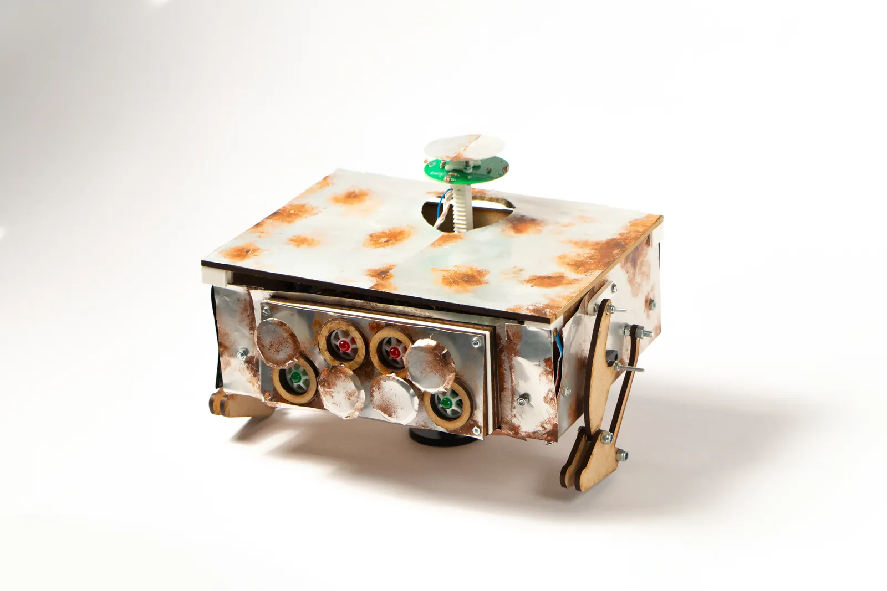
Recycled aluminium shell, semi-bipedal gait and four eyes driven by one servo.
Mechatronics · Embedded C++ · 2024
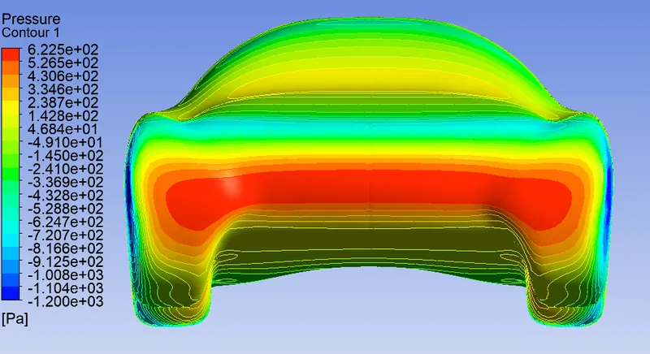
Ansys CFD, hand-calculated drag and a 1:20 wind-tunnel model.
CFD · Wind tunnel testing · 2025
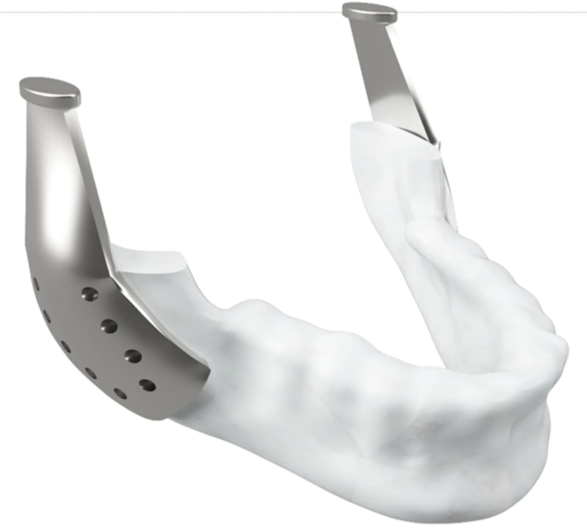
Honeycomb lattice and cut-outs in Ti-6Al-4V and SS316L, analysed in Ansys.
FEA · Biomedical · 2025
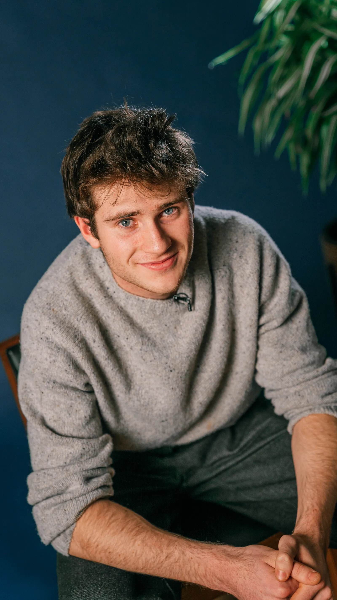
Fourth-year Design Engineering student at Imperial College London, on the Dean’s List.
I work where engineering meets industrial design. I start with the people who will use a product, then bring mechanisms, electronics and simulation together to make it work, and choose materials and finish to make it worth owning.
Away from the studio I make things by hand: leatherwork, tailoring, woodwork and millinery.